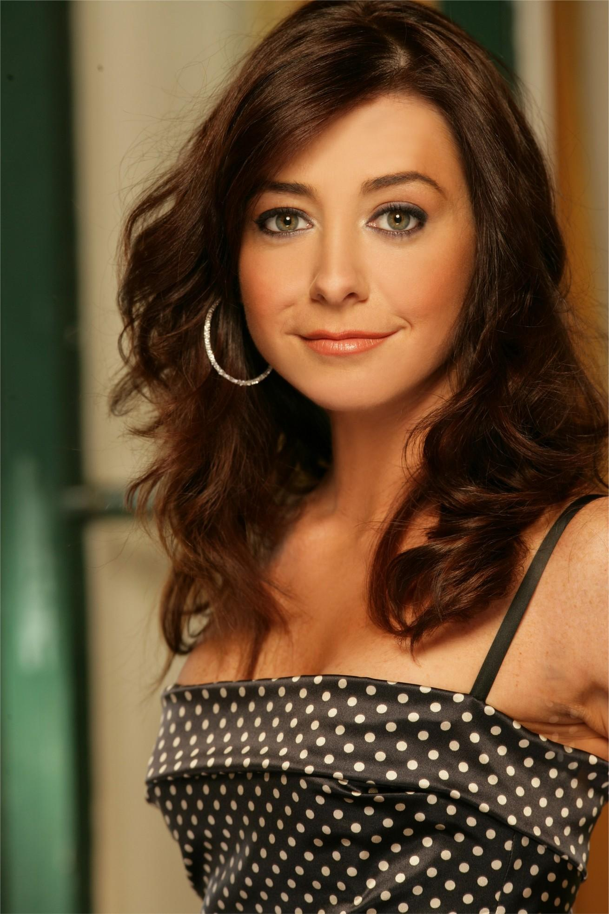

Ted Mosby

Ted Mosby is de hoofdpersoon van het verhaal. Als architect gaat Ted wonen in een appartement met zijn beste vriend Marshall. Terwijl hij opzoek gaat naar de vrouw waar hij zijn levens mee wil delen maakt hij allemaal avonturen mee en ontmoet ook Robin. Hij gaat een relatie met haar aan. Deze gaat over en hij ontmoet nog andere vrouwen. Uiteindelijk ontmoet hij de moeder van zijn kinderen genaamd Tracy McConnell. Als zei overlijdt op het einde blijkt dat Ted het verhaal aan zijn kinderen vertelde om duidelijk te maken dat Robin eigenlijk de grote liefde van zijn leven is. Zijn kinderen vertellen hem dan dat hij Robin op een date moet vragen en dan doet hij dat.
Marshall Eriksen

Marshall Eriksen woonde in het begin van de serie samen met Ted Mosby terwijl hij een relatie had met zijn vriendin Lily. Lily en Marshall hadden ontmoet in college toen ze een een kamer bijna naast elkaar hadden. Hij ontmoette Ted ook voor het eerst in college, omdat Ted en Marshall kamergenoten waren. Marshall is advocaat geworden omdat hij bij een milieuvriendelijk bedrijf wilde werken. Echter kreeg hij een baan aangeboden die hij niet af kon slaan maar niet goed was voor het milieu. Na een paar jaar was er wel een baan die het milieu beschermd en had hem ook genomen. In het eerste seizoen van de serie had Marshall Lily ten huwelijk gevraagd, het duurde echter wel een tijdje voordat ze gingen trouwen, omdat lily eerst nog een jaar uit New York ging studeren.
Robin Sherbatsky

Haar vaders naam is ook is Robin Scherbatsky, en ze heeft een jongere zus genaamd Katie. Ze was een Canadese popster die whisky drinkt, sigaren rook, gewapend is en later verslaggever en het ochtendjournaal presenteerde. Het einde van de serie gaf aan dat ze in 2020 buitenlandcorrespondent werd voor Global News, maar besloot de functie van nieuwsanker over te nemen en naar New York te verhuizen. Robin raakte in 2005 bevriend met de bende na een ongemakkelijke date met Ted Mosby. Ze is Lily's beste vriendin en Ted's ex-kamergenoot en ex-vriendin. Ze trouwde in 2013 met Barney, maar scheidde in 2016. Zes jaar nadat Teds vrouw stierf in 2030, kwam hij naar haar appartement met een blauwe hoorn en eindigde de show met haar lachend naar zijn raam.
Barney Stinson

Barney is een van de vijf hoofdpersonages van how I met your mother. Hij ontmoette Ted voor het eerst in een bar in 2001 en sindsdien initieerd hij zichzelf als onderdeel van de groep. Ondanks Teds protesten is hij nog steeds zijn beste vriend. Naarmate de serie vorderde, werd ontdekt dat Barney's jeugdproblemen niet waren opgelost, vooral niet met zijn afwezige vader, die in 2011 opnieuw contact met hem opnam. Hij geeft heel veel om zijn vrienden en familie en gebruikt zijn rijkdom vaak om hen te helpen. Hij is een sleutelfiguur in het helpen van Marshall en Ted bij het vinden van goedbetaalde banen bij GNB en het helpen van Robin om in de Verenigde Staten te blijven wanneer zijn VISA op het punt staat te worden geannuleerd. In een aflevering scheidden Barney en Robin na drie jaar huwelijk, omdat Robin door haar carriere heel de wereld over moste reizen, konden ze hun relatie niet onderhouden. In september 2019 ontdekte Barney dat hij vader zou worden na een nacht op de tribune. Hij sprak over het gelukkig opvoeden van zijn dochter als hij in 2020 de bruiloft van Ted en Tracy bijwoont.
Lily Aldrin
Lily Aldrin is een van de karakters in "How I met your mother". Ze is de beste vriend van Robin en de vrouw van Marshall. In het begin van de serie werkte ze als kleuterleidster en daarna als kunstadviseur. Ook doet ze schilderen als een hobby. Lily staat er in de serie bekent om dat ze slecht geheimen kan bewaren. na een aantal jaar bleek het dat Lily zwanger was en noemde haar babyjongen Marvin. Toen Barney en Robin gingen trouwen werd er onthuld dat Lily voor de tweede keer zwanger was geworden. deze baby noemden ze Daisy. In de laatste aflevering van de serie kondigde Lily aan dat ze zwanger was van haar derde kind.